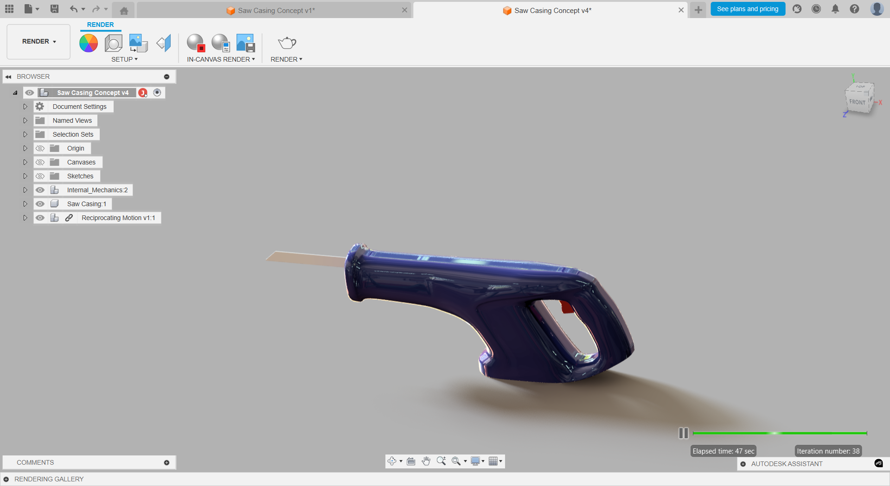
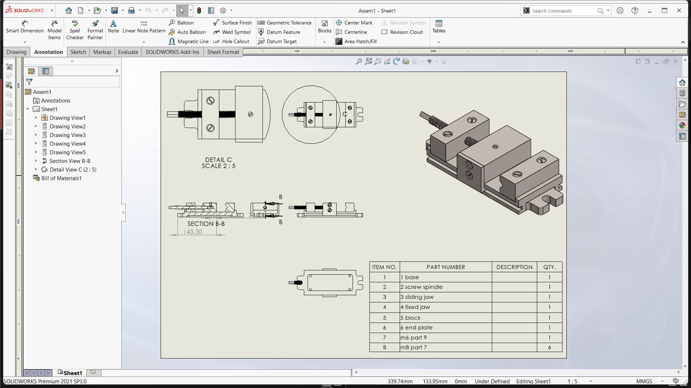

Design with intent
Start with the requirement, then build a solution around function, usability, and constraints.
Mechanical engineering graduate with a focus on 3D CAD, mechanical assemblies, and product concepts. I turn design requirements into clear, practical models and technical documentation.
Explore my projects ↘
I’m Johnson Prem, a Mechanical Engineer interested in how products are designed, assembled, and improved. My work combines mechanical fundamentals with CAD modeling to develop concepts that are functional, manufacturable, and easy to communicate.
I have experience creating 3D models, assemblies, and engineering drawings using SolidWorks, Fusion 360, and AutoCAD. I’m especially interested in mechanical design, robotics, and sustainable engineering applications, and I’m keen to keep learning through hands-on projects and collaboration.
Start with the requirement, then build a solution around function, usability, and constraints.
Use careful modeling and clear drawings to support fit, assembly, and communication.
Explore alternatives, review the outcome, and refine the design through iteration.
A selection of academic and personal design explorations in product design, mechanical assemblies, and engineering visualization.

Geometric lamp concept with a lattice structure, developed to explore form, light diffusion, and parametric modeling.

Power-tool casing concept focused on grip form, user interaction, and a streamlined product envelope.

Vise assembly with technical drawing views and bill of materials, emphasizing component relationships and assembly communication.

Minimal wristwatch concept exploring proportion, material contrast, and a clean product design language.
Five-cylinder radial engine model showing component arrangement and mechanical assembly relationships.

Engine mechanism study featuring crankshaft, connecting rods, and piston arrangement in a four-cylinder layout.
Part modeling, assemblies, surface exploration, and technical drawing development.
SolidWorks, Fusion 360, and AutoCAD for mechanical design and visualization.
Design principles, materials, manufacturing processes, and engineering analysis foundations.
Organized drawings, component breakdowns, and clear presentation of design intent.
Structured thinking, iteration, and practical evaluation of design alternatives.
Open to feedback, coordination, and learning from cross-functional teams.
Bachelor of Engineering
Latha Mathavan Engineering College
Academic foundation in mechanical design, thermal systems, manufacturing processes, materials science, engineering mathematics, and CAD/CAM technologies.
Open to opportunities
I’m interested in mechanical design roles, product development, collaborative projects, and opportunities to grow as an engineer. Reach out to discuss a role or project.